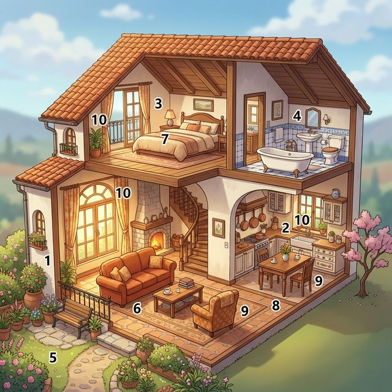
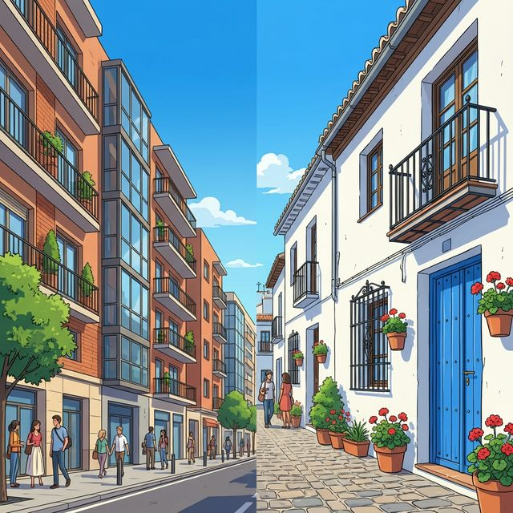

Cervantes: §10 Vivienda: 주거의 유형, 집의 구조 및 가구와 위치 표현
Hogar, dulce hogar (즐거운 나의 집)
집은 단순한 물리적 공간을 넘어 우리의 정체성이 반영되는 가장 편안한 안식처입니다. 이번 장에서는 집의 다양한 종류와 방의 명칭, 그리고 가구들의 이름을 배웁니다. 또한 'hay'와 'estar'를 구분하여 집 안에 무엇이 어디에 있는지를 정확하게 설명하고, 위치 부사를 활용해 공간을 묘사하는 방법을 익힙니다. 스페인의 독특한 아파트 문화(Piso)와 정원이 있는 단독주택(Chalet)의 차이점도 함께 알아봅시다.
학습 목표
- 집의 종류 및 방, 가구 명칭 20개 이상 습득
- 'hay'와 'estar'의 용법 완벽 구분 및 활용
- 위치 부사(encima de, debajo de 등)를 사용한 공간 묘사
- 스페인의 전형적인 주거 형태와 특징 이해
꿈꾸던 예쁜 이층 집의 내부 구조입니다. 각 번호가 가리키는 방과 가구의 이름을 확인하며 나만의 공간을 상상해 보세요.

| # | Spanish | English Bridge | Korean Tip |
|---|---|---|---|
| 1 | el salón | Salon (Living room) | 거실 |
| 2 | la cocina | Cuisine / Kitchen | 주방 (부엌) |
| 3 | el dormitorio | Dormitory ✅ (Sleeping area) | 침실 (방) |
| 4 | el baño | Bath ✅ | 욕실 (화장실) |
| 5 | el jardín | Garden ✅ | 정원 (마당) |
| 6 | el sofá | Sofa ✅ | 소파 |
| 7 | la cama | — | 침대 |
| 8 | la mesa | — | 탁자 (테이블) |
| 9 | la silla | — | 의자 |
| 10 | la ventana | Vent / Ventilation (Window) | 창문 |
✅ 표시된 단어는 영어와 어원이 같거나 매우 유사한 'Cognates'입니다.
나의 집을 소개하거나 물건의 위치를 물을 때 사용하는 핵심 표현들입니다.
A. 집 소개하기 (Describing the House)
- Vivo en un piso pequeño en el centro. (I live in a small flat in the center. / 저는 시내의 작은 아파트에 살아요.)
- Mi casa tiene tres habitaciones. (My house has three rooms. / 우리 집은 방이 세 개 있어요.)
- La cocina es moderna y luminosa. (The kitchen is modern and bright. / 주방은 현대적이고 밝아요.)
- Hay un jardín grande detrás de la casa. (There is a big garden behind the house. / 집 뒤에 큰 정원이 있어요.)
B. 위치 묻고 답하기 (Asking & Giving Location)
- ¿Dónde está el baño? (Where is the bathroom? / 화장실이 어디인가요?)
- Está al final del pasillo, a la derecha. (It's at the end of the hall, on the right. / 복도 끝 오른쪽에 있어요.)
- ¿Qué hay en el salón? (What is there in the living room? / 거실에 무엇이 있나요?)
- Hay un sofá y una televisión. (There is a sofa and a TV. / 소파 하나와 TV가 있어요.)
이번 장에서는 존재를 나타내는 'hay'와 위치를 나타내는 'estar', 그리고 위치를 정교하게 묘사하는 부사들을 배웁니다.
영어의 'there is/are'와 'is/are'의 구분과 유사하지만, 스페인어만의 독특한 규칙이 있습니다.
예: En mi habitación hay una cama. (내 방에 침대가 하나 있다.)
Estar: 특정한 대상의 구체적인 위치를 말할 때 사용합니다.
사물의 구체적인 위치를 설명하기 위해 전치사 'de'와 함께 자주 쓰입니다.
| Spanish | English Bridge | Korean Meaning |
|---|---|---|
| Encima de | — | ~ 위에 |
| Debajo de | — | ~ 아래에 |
| Delante de | — | ~ 앞에 |
| Detrás de | — | ~ 뒤에 |
| Cerca de | — | ~ 근처에 |
| Lejos de | — | ~ 멀리에 |
| A la derecha de | Right | ~의 오른쪽에 |
| A la izquierda de | — | ~의 왼쪽에 |
스페인 사람들은 어떤 집에서 살까요? 그들의 주거 문화를 엿보세요.

En España, la mayoría de la gente que vive en las ciudades reside en pisos. Un "piso" es un apartamento en un bloque de edificios. A los españoles les gusta vivir cerca del centro, de las tiendas y de los bares. Por eso, las ciudades son muy compactas y tienen mucha vida en la calle. Muchos de estos edificios tienen un patio interior, un espacio abierto en el centro del edificio que da luz y aire a las habitaciones.
Por otro lado, a las familias que prefieren la tranquilidad les gusta vivir en un chalet. Un chalet es una casa unifamiliar, a veces con jardín o piscina, situada normalmente en las afueras de la ciudad (las urbanizaciones). En el sur de España, como en Andalucía, son famosas las casas blancas con rejas de hierro en las ventanas y macetas con flores. Esta diversidad demuestra la mezcla entre la modernidad urbana y la tradición mediterránea.
[한국어 번역]
스페인에서는 도시에 사는 대부분의 사람들이 피소(piso)에 거주합니다. '피소'는 빌딩 블록 안에 있는 아파트를 말합니다. 스페인 사람들은 시내, 상점, 그리고 바(bar) 근처에 사는 것을 좋아합니다. 그래서 도시는 매우 조밀하고 거리에 활기가 넘칩니다. 이러한 건물들 중 다수는 건물 중앙이 비어있는 파티오(patio interior)를 가지고 있는데, 이는 방들에 빛과 공기를 제공하는 열린 공간입니다.
반면, 평온함을 선호하는 가족들은 샬레(chalet)에 사는 것을 좋아합니다. 샬레는 대개 정원이나 수영장이 딸린 단독주택으로, 보통 도시 외곽(주거 단지)에 위치합니다. 안달루시아와 같은 스페인 남부에서는 창문의 철제 창살과 꽃 화분으로 장식된 흰색 집들이 유명합니다. 이러한 다양성은 도시의 현대성과 지중해의 전통이 섞인 모습을 잘 보여줍니다.
A. Match the word (알맞은 단어를 연결하세요)
| Spanish | English / Korean |
|---|---|
| 1. La cocina | a. Bed |
| 2. El jardín | b. Window |
| 3. La cama | c. Kitchen |
| 4. La ventana | d. Chair |
| 5. La silla | e. Garden |
B. Choose between 'Hay' or 'Está/Están' (알맞은 것을 고르세요)
C. 번역 연습 (주어진 상황에 맞게 번역하세요)
La casa de mis sueños (내가 꿈꾸는 집)
Me llamo Laura y busco la casa de mis sueños. No quiero vivir en un piso ruidoso en el centro. Prefiero un chalet pequeño en el campo, cerca de la montaña. Mi casa ideal tiene dos dormitorios grandes y un salón con mucha luz. En el jardín hay muchos árboles y flores de colores. También quiero una cocina moderna porque me encanta cocinar para mis amigos. Detrás de la casa hay un pequeño río. Es un lugar muy tranquilo para leer y descansar.
Questions:
1. 라우라는 왜 시내 아파트에 살고 싶어 하지 않나요? (Why doesn't Laura want to live in the city?)
- ............................................................
2. 라우라가 꿈꾸는 집 근처에는 무엇이 있나요? (What is near her dream house?)
- ............................................................
[한국어 번역]
제 이름은 라우라이고 저는 제가 꿈꾸는 집을 찾고 있습니다. 저는 시내의 시끄러운 아파트에 살고 싶지 않아요. 저는 산 근처의 시골에 있는 작은 단독주택(chalet)을 선호합니다. 저의 이상적인 집은 큰 침실 두 개와 빛이 많이 들어오는 거실이 있습니다. 정원에는 많은 나무들과 알록달록한 꽃들이 있습니다. 또한 저는 친구들을 위해 요리하는 것을 정말 좋아하기 때문에 현대적인 주방을 원합니다. 집 뒤에는 작은 강이 흐르고 있습니다. 책을 읽고 휴식을 취하기에 아주 평온한 장소입니다.
Buscando un nuevo piso (새 아파트 찾기)
Situación: Mateo y Elena están mirando anuncios de alquiler porque necesitan un piso nuevo para el próximo semestre.
상황: 마테오와 엘레나가 다음 학기를 위해 새 아파트가 필요해서 월세 광고를 보고 있습니다.
| Spanish | Korean |
|---|---|
| Mateo: Mira este anuncio, Elena. "Piso luminoso con dos habitaciones". | 마테오: 엘레나, 이 광고 좀 봐. "방 두 개가 딸린 밝은 아파트". |
| Elena: ¿Dónde está? ¿Está cerca de la universidad? | 엘레나: 어디에 있어? 대학교랑 가까워? |
| Mateo: Sí, está a solo diez minutos a pie. | 마테오: 응, 걸어서 딱 10분 거리야. |
| Elena: ¡Genial! ¿Y qué hay en el piso? | 엘레나: 멋지다! 그리고 아파트 안에 뭐가 있어? |
| Mateo: Hay una cocina americana y un salón grande. Pero solo hay un baño. | 마테오: 오픈형 주방이랑 큰 거실이 있어. 하지만 화장실은 하나뿐이야. |
| Elena: No importa. ¿Tiene muebles o está vacío? | 엘레나: 상관없어. 가구가 갖춰져 있어, 아니면 비어 있어? |
| Mateo: Dice que está amueblado. Hay camas, armarios y hasta una lavadora. | 마테오: 가구가 갖춰져 있대. 침대, 옷장, 심지어 세탁기까지 있어. |
| Elena: Perfecto. Vamos a llamar ahora mismo para verlo. | 엘레나: 완벽해. 지금 당장 확인하러 전화해보자. |
이번 장의 핵심 내용을 복습해 보세요.
- [ ] 집의 방 이름과 가구 명칭 10개 이상을 스페인어로 말할 수 있나요?
- [ ] 'Hay'와 'Estar'의 차이점을 설명하고 문장에 적용할 수 있나요?
- [ ] 'encima de', 'detrás de' 등 위치 부사를 활용할 수 있나요?
- [ ] 스페인의 'Piso'와 'Chalet'의 차이를 이해했나요?
¡Muy bien! 이번 장을 통해 여러분은 자신의 가장 소중한 공간인 '집'을 스페인어로 묘사하는 법을 배웠습니다. 단순히 '있다'와 '없다'를 넘어, 무엇이 구체적으로 어디에 있는지 설명하는 능력은 일상 대화에서 매우 중요합니다. 여러분의 방을 둘러보며 "En mi cuarto hay..."라고 연습해 보세요. 다음 장에서는 우리가 배우고 성장하는 공간인 '학교(En la escuela)'에 대해 알아보겠습니다. ¡Hasta pronto!
6. Práctica - A. Match the word
1-c, 2-e, 3-a, 4-b, 5-d
6. Práctica - B. Choose between 'Hay' or 'Está'
1. hay / 2. está / 3. están / 4. hay / 5. está
6. Práctica - C. 번역 연습
1. Hay un libro encima de la silla.
2. Mi casa es muy tranquila y limpia.
3. El baño está al lado de la cocina.
4. ¿Cuántas ventanas hay en el salón?
5. La televisión está delante del sofá.
7. Lectura Questions
1. 시끄러운 아파트가 싫기 때문입니다. (Porque no quiere vivir en un piso ruidoso.)
2. 산과 작은 강이 있습니다. (Están la montaña y un pequeño río.)